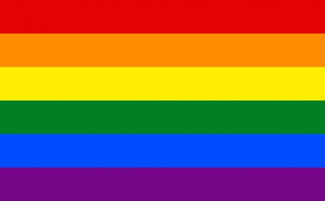
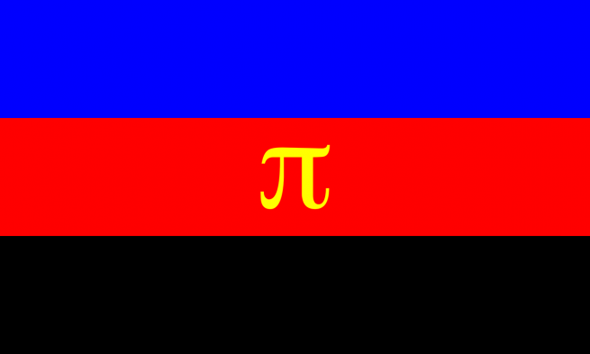
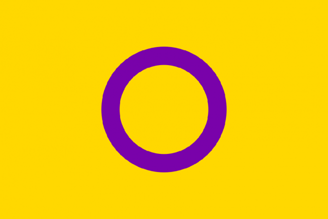
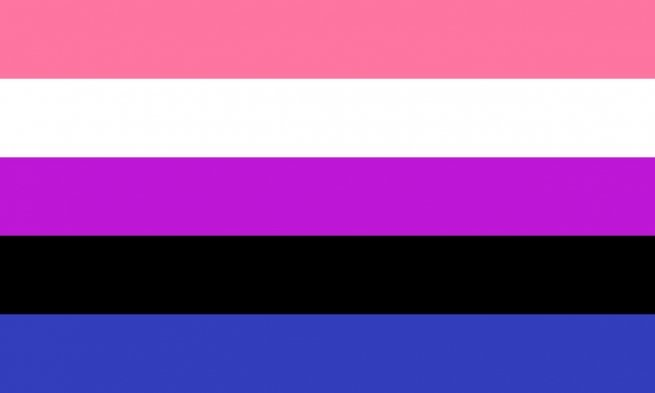
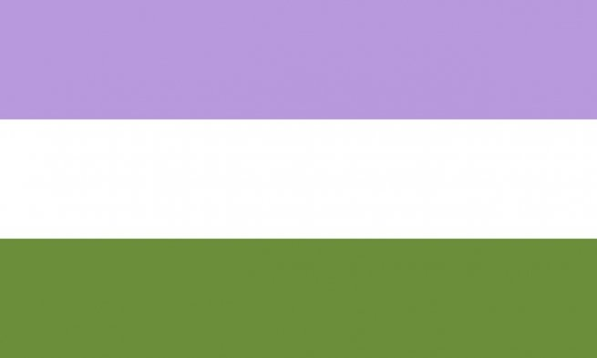
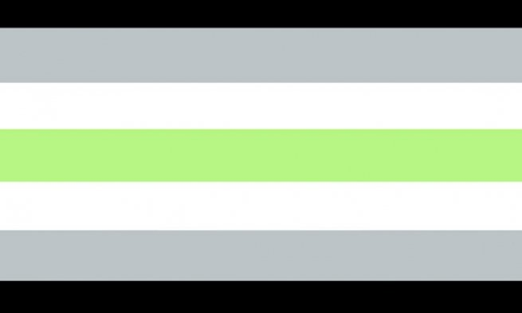
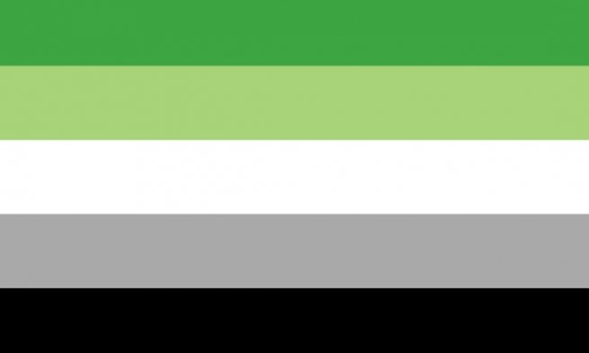

The diferent pribe flags and what they mean.
Traditional Gay Pride Flag
This is the most familiar flag. In 1979, the community landed on this six-color version,
which was hung from lampposts in San Francisco. Numerous complications over having an odd-number
of colors led to turquoise being dropped, at least according to reports.

Bisexual Pride Flag
Designed by Michael Page, the flag brings visibility to the bisexual community, showing the overlap of the stereotypical colors for boys and girls. The flag was inspired by an older symbol of bisexuality: the "biangles," two overlapping pink and dark blue triangles.

Pansexual Pride Flag
Created on the web in 2010, this flag has colors that represent pansexuality's interest
in all genders as partners. The pink represents women, yellow nonbinary and gender-nonconforming
people, and the blue is for men.

Asexual Pride Flag
Like the pansexual flag, the asexual flag was created in 2010. Inspired by the Asexual Visibility and Education Network logo, it represents many ace identities, including graysexuals (the fluid area between sexuals and asexuals) and demisexuals (people who don't experience sexual attraction unless they have an emotional connection with their partners).

Polyamory Pride Flag
Featuring the symbol for the infinite numberpi, which shares the first letter of "polyamory,"
this flag celebrates the infinite selection of partners available to polyamorous people. The letter
is gold to represent the emotional attachment we have with others as friends and romantic partnerss,
rather than just our carnal relationships.

Intersex Pride Flag
Designed in 2013 by the organization Intersex International Australia, this flag intentionally
features nongendered colors that celebrate living outside the binary.

Transgender Pride Flag
Monica Helms, a trans woman, designed this flag in 1999, and it was first flown at a Pride
Parade in Phoenix a year later. “The light blue is the traditional color for baby boys, pink is
for girls, and the white in the middle is for those who are transitioning, those who feel they have
a neutral gender or no gender, and those who are intersexed,” Helms noted. “The pattern is such that
no matter which way you fly it, it will always be correct. This symbolizes us trying to find
correctness in our own lives.”

Genderfluid/Genderflexible Pride Flag
Encompassing the fluctuations and the flexibility of gender in genderfluid people, the flag features
colors associated with femininity, masculinity, and everything in between. The pink stands for femininity.
The white represents the lack of gender. The purple represents the combination of masculinity and femininity.
The black symbolizes all genders, including third genders. The blue reflects masculinity.

Genderqueer Pride Flag
Created in 2011 by Marilyn Roxie, the genderqueer flag highlights androgyny with lavender, agender
identities with white, and nonbinary people with green. Some people refer to it as a nonbinary flag if
they feel queer is a slur.

Polysexual Pride Flag
Polysexuality, unlike pansexuality, is the attraction to multiple genders but not all. A middle
ground between bisexuality and pansexuality, it is centered more around attractions to femininity and
masculinity rather than gender itself. The pink represents attraction to females; the blue for males.
The green is for an attraction to those who don't conform to either gender.

Agender Pride Flag
While genderqueer people bend the rules of gender, agender people reject a gender completely.
For their flag, the black and white stripes represent the absence of gender, while green, the inverse of the
gender-heavy purple, represents nonbinary genders.

Aromantic Pride Flag
While asexual flags use purple to show their lack of sexual attraction, aromantic flags use green to celebrate
the people who live without romantic attraction.

Non Binary Pride Flag
Created by 17-year-old Kye Rowan in 2014, this flag was a response to nonbinary people feeling
improperly represented by the genderqueer flag. This symbol was not to replace Roxie's creation but sit
beside it as an option. The yellow symbolizes gender outside a binary. The white, a mix of all colors,
represents those with many or all genders. Purple stands in for those who feel both binary male and female
or fluid between them. The black is for the agender community, without sexuality or color.